原文出处:本文由博客园博主python、小小白提供。
原文连接:https://www.cnblogs.com/llb1012/p/11286781.html
原文连接:https://www.cnblogs.com/llb1012/p/11286781.html
django项目环境搭建
1.Python虚拟环境创建
首先我们为什么要创建虚拟环境呢？因为不同的项目所依赖的环境不一样，他们需要不同的第三方库等等。为了避免冲突，所以我们要创建虚拟环境，在次此我用的的Linux ubuntu和pycharm。
在虚拟机上创建Python虚拟环境命令为：
mkvirtualenv -p /usr/bin/python3 虚拟环境名字 （-p参数选择虚拟环境要用的Python解释器）
2.创建django项目
第一步：进入到你要创建项目的目录
cd ~/project
第二步：安装django
pip install django==2.1.10(建议不要安装最新版)
第三步：创建django项目
django-admin startproject 项目名字
到此为止，虚拟环境的工作已经完成，接下来我们需要到pycharm中进行项目的创建
3.创建pycharm项目
创建pycharm项目，连接虚拟机，进行开发
3.1创建项目
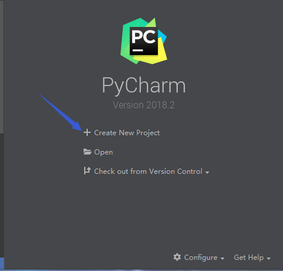
3.2选择项目本地路径

3.3项目环境远程解释器的配置
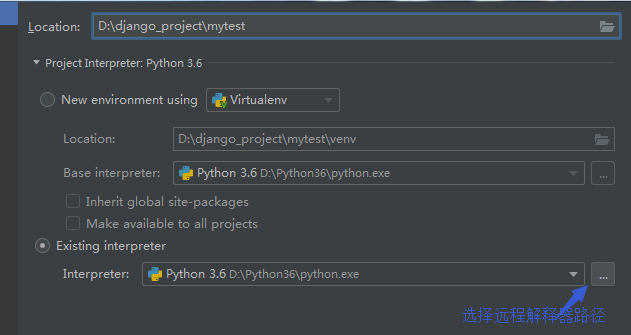
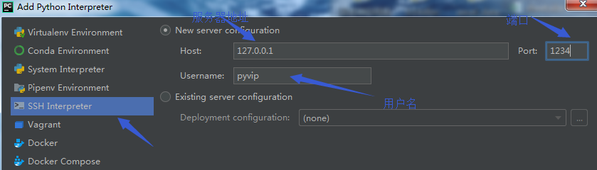
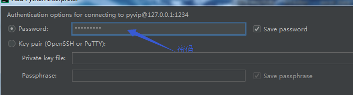
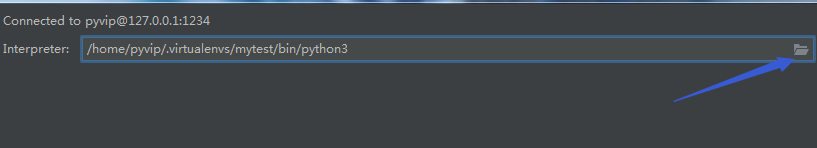

3.4设置同步配置
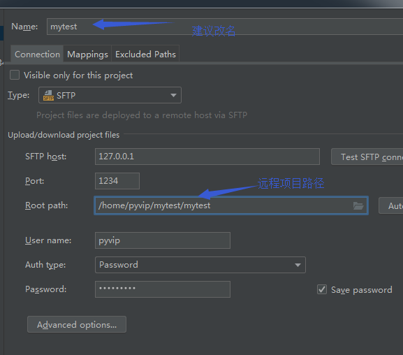
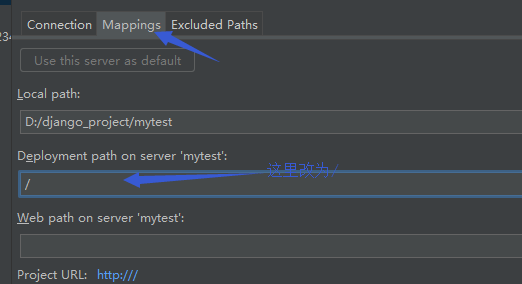

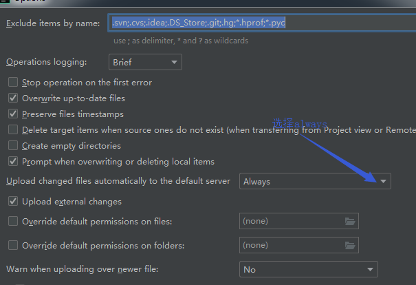
4.pycharm配置django项目
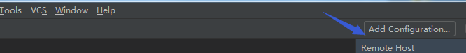
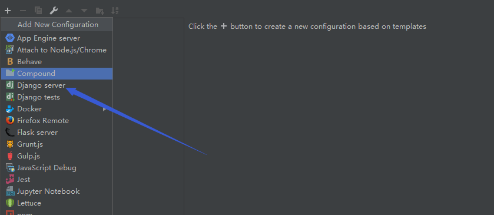
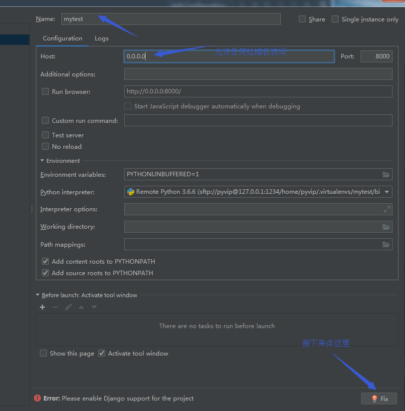
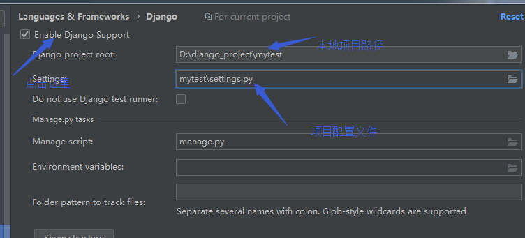
5.运行项目
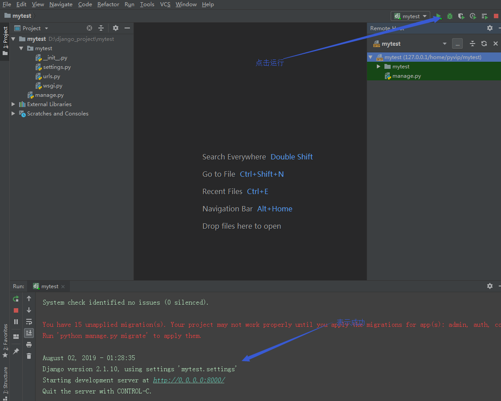
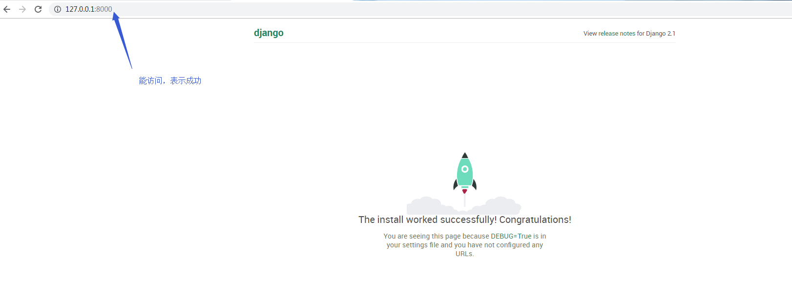
6.总结
到此，你已经学会了如何在创建虚拟环境，以及在虚拟机及本地创建django项目，本地连接到虚拟机，各位，觉得可以的给个赞，有什么不明白的麻烦评论私信，随时为你解决您的疑问，谢谢大家....